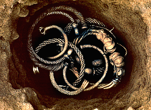

In ancient times, any treasure found usually ended up becoming the property of the King! This was because of the law of Treasure Trove, which dates back to at least Richard the Lionheart (1189-1199 AD), and was based on even earlier medieval laws. The new Treasure Law introduced in September 1997 was designed to reward the finders of Treasure and to try and safeguard our own heritage for future generations.
Over the centuries, the old law of Treasure Trove had become very complicated. If a treasure was found there would usually be a Coroner's inquest to decide to whom it belonged. At an inquest many things affecting the outcome of a case had to be considered, including whether a treasure had been lost or deliberately buried, which county it was found in, was it found on a beach between low and high water marks, and even what species of trees were found growing nearby...!
The new Treasure Act has simplified matters considerably. Objects found which are over 300 years old and contain more than 10% of gold or silver may be declared to be 'Treasure'.